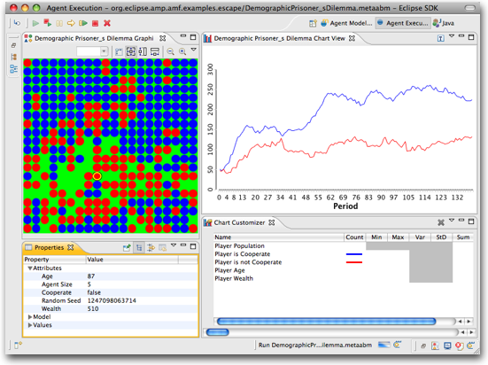
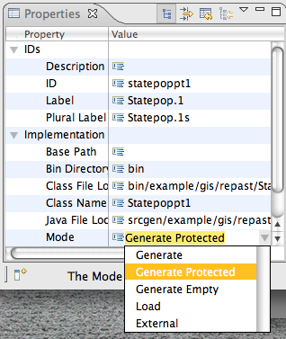

Escape is a full-featured Agent-Based Modeling (ABM) integrated development environment (IDE) with a Java based API and end user modeling tools. It's based on Ascape, which has been in use for more than 10 years. The core API is very stable, and that should give users a way to explore the features of AMP without concerns about keeping in synch with the rapidly evolving AXF /AGF API. It allows modelers to code in Java and/or generate models with AMF and then execute those models within the same development environment.

A primary purpose of the Escape project -- apart from the obvious goal of providing a nice Eclipse hosted ABM toolkit -- is to provide an exemplar to demonstrate how any arbitrary agent modeling framework can be integrated within the AMP environment. A cool aspect of this is that AMP has no dependencies on Escape, but also that the underlying ABM modeling framework for Escape has no dependencies on AMP -- instead Escape simply provides the runtime glue between AMP and the ABM framework. The underlying ABM framework uses the Ascape API, an API that first began development more than ten years ago and that has not been modified at all in order for it to work within the AMP environment.
Because it's API is based on Ascape, Escape is one component of AMP that already has extensive documentation. There is complete Javadoc as well as a manual and other web resources. See the Ascape Website to locate these resources. There is a full manual for Ascape available on that site. Or, you can install the Ascape Manual into the eclipse help system by adding the following update site and selecting the "Documentations and Source Code" feature.
Escape is installed by default with the other model components. If you want to do 3D (really 2 1/2) visualizations, you will want AGF3D and the LWJGL dependency. You can build from source but in that case you'l need to launch a self-hosted runtime, so it's best to simply install from the update site if you're not actually doing AMP development.
The easiest way for Java developers to get started doing agent-based modeling in Eclipse is to begin to write programs using it. To develop new models, you can:
-
Create a new Escape project. The Escape projects are actually configured for AMF code generation so there are dependencies and builders in there that you don't need; you can remove all of the escape builders and any of the kitchen sink items. The "Create an Escape Java Model" cheat sheet will walk you through the process of creating a new Java based project and model.
-
Or for more experienced Eclipse users, you can simply to just create a new Plugin Project and add the necessary dependencies there. Have a look at the example escape project to see what you need. Note that you will likely need more dependencies then you need to simply build -- this is because the class loader uses the classes from the project path and so runtime classes have to be there as well. We may simply package an Eclipse runtime convenience plugin to gather these dependencies up a bit.
Then just create new Java classes for your root model scape and agents just as you would for an Ascape project.
If you're like many Java developers, you might find point-and-click interfaces a bit lame. Personally, I've changed my tune in this, and I now define all of my ABM models from the editor, saving Java for truly specialized tasks. But even without generation of agent behavior, Acore can be a really valuable tool, as the GIS example shows. The way to look at metaABM is as a way to compose your overall model and automate the tedious parts. Apart from Java generated code, the AMF meta-model maintains a number of very useful artifacts. For example, the Repast Simphony target maintains model.score and all of the model.rs component. Generally, AMF should save time and hassle while making your models far more transparent even if you never use the Actions component to define agent behavior.
As explained in the action section, you can simply create a "Method" act with hand-written Java code. This option is nice because all code is contained within the AMF file. But it can be difficult to maintain large blocks of Java code as you aren't using a Java editor to edit the Java code itself. One way to get around this is to create your code in the generated Java method and then copy it into the Method action. Note one imporant issue here -- you'll generally have to fully qualify your Java references as you won't be able to change the imports statements directly.
You can mix and match Action behavior with Java and generated code with POJOs. One way to do this is through using protected regions. Select the agent you want to create protected methods for and then select "Generate Protected" from the "Mode" property. Now, create actions just as you have before, or use your existing ones. On code generation, open up the relevant java file and examine the methods that have been created.

You can put whatever you want within the PROTECTED REGION comments and those changes will be preserved when the model is regenerated. You can create a schedule, rule or watcher, maintain custom code for the actual implementations, and still have the model adapt to changes in the underlying data structure -- if for example you want to import a modified shape file.

There are only a few changes should have to make to existing Ascape models or to use existing Ascape documentation to develop Escape models.
Because Escape uses SWT and Ascape uses Swing, there are a few unavoidable incompatibilities. Most of these we avoid by using higher level APIs but here are the key changes that you're likely to have to make:
The simplest way to accomplish this is to remove all of the imports and then organize imports. For example:
java.awt.Color => org.eclipse.swt.graphics.Color
java.awt.Graphics => org.eclipse.draw2d.Graphics
Then just do a global find for all of the imports and replace them with nothing. This is a great place for a regexp. Try:
find: import java\.awt\.(.*);
replace: [nothing]
You don't have to replace these with the SWT equivalents, just click on the project, right-click and choose "Source:Organize Imports.." By the way, a great way to avoid having to select the right entries in optimize imports and to alert you when you have missed anything is to prevent the awt and swing classes from being used at all. Right-click on project, choose "Build Path:Configure Build Path", go to Libraries tab, open JRE System Library, choose "Access Rules", edit, and then add entries for java/awt/** and javax/swing/**. The code will regenerate and you'll have error markers for all of the stuff that won't work with Escape and Eclipse.
You can't use AWT colors either so you'll need to replace any colors. AMP provides a convenience classes for Colors called ColorFeature and ColorFeatureConcrete. You can use these or any of the other ways to define SWT colors. For example:
Color.lightGray => ColorFeature.LIGHT_GRAY
new Color(Math.min(1.0f, (float) (redEnergy + orangeEnergy)), (float) orangeEnergy * .8f, (float) blueEnergy) =>
ColorFeatureConcrete.create(Math.min(1.0f, (float) (redEnergy + orangeEnergy)), (float) orangeEnergy * .8f, (float) blueEnergy)
If you've defined colors through overriding Agents as in most models, you'll need to change the method signature. You could just do a global replace for this one.
public Color getColor( => public Object getPlatformColor(
Escape doesn't support them. In practice they haven't been used a lot. At some point perhaps we'll have nice sprite support instead. :)
public Image getImage() {**} => ""
If you've created any of your own draw features, you'll need to change them slightly to accommodate the differences between the AWT and SWT / Draw2D APIs. This should be pretty straightforwrd. For example:
g.setColor(...
g.fillOval(..
becomes:
g.setBackgroundColor(
g.fillOval(..
That's about it, though it's probable that we've missed something. Please post a message on the amp newsgroup if you run into any other conversion issues.
Instead of using Ant, Escape has really nice support for parameterizing and testing models. See Experimenting and Testing (todo). If you do want to work with ant you will need to install the plugins from the Sourceforge download site. (These have dependencies that I didn't want to bother with going through the Eclipse IP process to get in. If for some reason you think these should be part of core Escape let Miles know and I'll take care of it.) Ant has not been tested for Escape so it's not even clear it will work.
The first thing most people will want to do in AMP is to play with the example models. You can explore AMF models as well as some really interesting classic ABM models.
To obtain the models, simply launch the cheat sheet. Go to the Help > Cheat Sheets... menu and choose "Load Sample Projects".
Or you can get them yourself from the following locations:
org.eclipse.amp/org.eclipse.amp.amf/examples/org.eclipse.amp.amf.examples.escape
To understand the capabilities of AMF, you might also want to try out running the same models automatically generated for Ascape or Repast. These are located at dev.eclipse.org in cvsroot/modeling:
org.eclipse.amp/org.eclipse.amp.amf/examples/org.eclipse.amp.amf.examples.ascape
org.eclipse.amp/org.eclipse.amp.amf/examples/org.eclipse.amp.amf.examples.repast
These are SVN projects in the sourceforge SVN. For help, see http://www.eclipse.org/subversive/documentation/teamSupport/find_check_wiz.php this page.
http://ascape.svn.sourceforge.net/svnroot/ascape/org.ascape.escape.models.brook
http://ascape.svn.sourceforge.net/svnroot/ascape/org.ascape.escape.models.examples
There are a number of models developed with AMF that can automatically generate example models to run in Escape. There are two ways to run the example models:
The best option is to simply create a new Escape project and drag the models into it!
-
If you're not already there, open the Agent Modeling Perspective. Select Window > Open Perspective > Other.. and then Agent Modeling. (Or you can choose Window > Reset Perspective and the Agent Modeling perspective should appear in the Open Perspective list itself.)
-
Next, let's create the project where we'll place our model. Select File > New > Escape AMF Project. Give it a name like "escape.tutorial", then click Finish.
-
Finally grab the Epidemic.metaabm model at http://download.eclipse.org/amp/models/Epidemic.metaabm and drag it into the project. (Depending on your browser the file may load as text directly into your browser, in which case just right-click on the link and save it to a file.)
We've developer have a complete cheat sheet supporting this tutorial. Simply go to Help > Cheat Sheets... and then select "Run an Example Model" from within the "Agent Modeling" category.
To understand the capabilities of AMF, you might also want to try out running the same models automatically generated for Ascape or Repast.
org.eclipse.amp/org.eclipse.amp.amf/examples/org.eclipse.amp.amf.examples.ascape
org.eclipse.amp/org.eclipse.amp.amf/examples/org.eclipse.amp.amf.examples.repast
Many models have been created using Ascape over the years, including all of the classic models created at Brookings and some other cool models such as Craig Reynold's Boids and a pretty cool little traffic model, and they've all been converted to run in Escape. They're in Java but you can execute and explore them in exactly the same way as the Epidemic model above. All of the Ascape example models have been converted (a straightforward process) from their intial Ascape incarnations. For licensing reasons (they're BSD, not EPL) we can't host them directly on the Eclipse site. You can get the projects in two ways:
Once you've downloaded the projects, open up the src folder and navigate to the Java files for the actual models. For example, to run Conway's Life, you'll want src/edu.brook.life.ConwayLife. Right-click on the Java file and select "Execute". There are many models to explore! (It's not always obvious which Java files are for models, so you may have to poke around a bit. We need to put together a catalog here. Another nice opportunity for user contributions.)